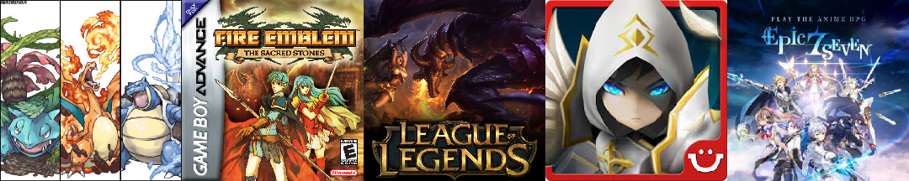

How do I Unwind?
Hobbies
Gaming
I love games that require me to strategize and really understand the mechanics in order to succeed. I started off with the Pokemon series on the original GameBoy, and eventually picked up the more strategic Fire Emblem series as I moved to the GameBoy Advanced. In Jr. High I got an Xbox and played all kinds of games. For the past few Years I've been loving League of Legends, but lately the gatcha games on mobile like Fire Emblem Heroes, Summoners War, and Epic Seven have caught my eye (F2P btw).
Food
You wouldn't know it just by looking at me, but I LOVE to eat! Whether it's homemade cooking, or an all you can eat buffet, I always finish what's on my plate; and don't be fooled by my appearence, I can eat a hefty serving (or two, or three). My favorite foods are donuts and ice cream, but I like all sweets and honestly I'll eat just about any kind of food *drools over plate of sushi*.
Anime
It all started with The Seven Deadly Sins. After watching that I had to have more, so I picked up Attack on Titan and it just sealed the deal. I can't even begin to pick a favorite anime, but a couple in the running would be:
- The Seven Deadly Sins
- Attack on Titan
- One Punch Man
- Castlevania
I prefer dubs over subs *GASP*. I have my reasons for liking dubs, but I'll tolerate subs if I don't want to wait for the dubbed version, or if someone I'm watching with won't watch dubs. Unpopular opinion: subs are not better than dubs, and dubs are not better than subs. I know some enthusiasts will tear me to shreds over this, but the truth is, beauty is in the eye of the beholder.
The MCU
I've been following the MCU ever since the beginning, the first Iron Man. He is my favorite hero of all the Avengers and he always will be, even after dying in Endgame. The only movie I haven't seen is the original Captain America. Despite popular belief, the percieved plot-hole of old man Cap in Avengers Endgame is indeed NOT a plot-hole at all, and I have faith in Marvel to explain any smaller plot-holes in the MCU's future installments, but until then, I'll be mourning the death of a great hero.
Game Design
I've been gaming for as long as I can remember, and for most of my life I've considered myself a hardcore gamer. All this game-time has given me a lot experience with what works in games and what doesn't, and of course, what I like in games and what I don't like. Needless to say I've had my own game ideas over the years ranging from interesting mechanics to story ideas, and I'd love to try them out some day in an enviroment where I can get feedback and improvements upon my ideas. But more than anything I've always wanted to make a game with the classic chess-like mechanics of Fire Emblem.
Animals
I love pretty much all animals, but my favorite are the ones that I can have as pets.
Dogs and Cats
I currently own a 60lb Yellow-Lab-Chow mix, and hes very fluffy! He was 8 years old when I adopted him in February of 2018, because old dogs need love too and he was exactly what I wanted. Before him, I had a Schipperke mix who was our family dog, but I commandeered him when my mom moved out of state and there was nobody left in the house to take him. My dad also has a cat, and way back in the day he also had a Chocolate-Lab.
Fishkeeping
One of my roommates in college had a 55g fish tank with some Electric Blue Acara's. At first I didn't care much for them, until I found myself staring at them for minutes at a time while doing homework late at night. They were so elegant and smart (for fish lol) and they just seemed to hover in place without any effort at all. I was hooked, no pun intended, and I picked up a 75g tank at the thrift store for pennies on the dollar. Since I was a college student, I didn't have a lot of money to spend on supplies, and I ended up making most of my equipment which was as fun an endeavor as having the fish was.
What have I Been Through?
Background
Timeline
- 1996
- Born in Gilroy, CA
- 2000
- Fell and broke right arm on concrete stair step
- Moved from San Juan Batista to Los Banos
- 2001
- Initiated academic career with K-12 online schooling
- 2004
- Shifted to public school at Charleston Elementary
- 2009
- Achieved perfect 600 score on the math STAR subject test
- Achieved perfect 600 score on the physical science STAR subject test
- 2011
- Began 4-year Track and Field high school career
- Began 3-year Water Polo high school career
- 2014
- Graduated from LBHS in the top 5% of my class with a 4.3 GPA
- Enrolled at UC Davis as a Biological Science major
- 2015
- Aquired an appreciation for the intricacies of Computer Science
- 2017
- Lost 14 year Schipperke in a car accident
- 2018
- Adopted a Yellow-Lab-Chow mix
- 2019
- Graduated from UC Davis with a Bachelor's Degree in Computer Science
- Present
- Looking for jobs in the software industry
- Practicing HTML, CSS, and JavaScript to build website